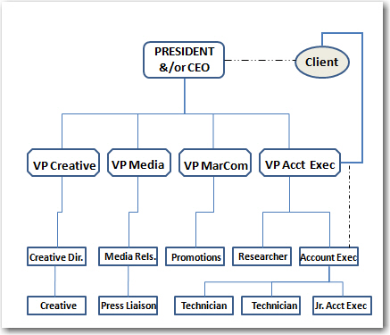

Organizational structure can, of course, have an impact on communication because of the reporting structures and flow of information in the organization. The typical structure of a simplified organization can be seen in Figure 5.1 "Simple Organizational Structure", with direct reporting relationships represented as solid lines.
Figure 5.1 Simple Organizational Structure

In this figure, a service or information arm would likely be present, but our concern is to focus on the role of the chief communications officer (CCO) relative to the other members of the dominant coalition, or C-suite, all reporting to the CEO. Those executives may vary from organization to organization and industry to industry, depending on the size of the pursuit, how complex it is, and how many sites it operates. Imagine that there are many levels of employees as we move down the organization who are not represented in this chart.
In an organization with a production component, such as any manufacturing-based organization, a more complex understanding of the organization begins to emerge. We can see in Figure 5.2 "Organizational Structure With a Production (Manufacturing) Component" how the chief production officer, or CPO, is added into the dominant coalition mix, alongside the chief finance officer (CFO), chief marketing officer (CMO), legal counsel, and CCO.
Figure 5.2 Organizational Structure With a Production (Manufacturing) Component

Most organizations of this type would have a very wide base of hourly production workers reporting to the CPO, as well as numerous supervisors and administrative staff of various kinds and levels throughout the chart. Simplifying it to the direct-reporting relationships involved in the management chain of command allows us to see how the corporate communication function both reports to the CEO and interacts with the rest of the dominant coalition across functional areas.
Finally, the public relations agency structure can vary a great deal from firm to firm, but it is based upon a consulting relationship to the client. A direct reporting relationship with a senior account executive or vice president of accounts is normally established, as well as a dotted-line, or as-needed, less frequent and more informal reporting relationship between an account executive (AE) and the lead of the agency, often the president or CEO. (See Figure 5.3 "Public Relations Agency Structure" for an example of public relations agency structure.)
Figure 5.3 Public Relations Agency Structure
The AE would have more routine contact with the client on a day-to-day working basis, and the CEO would have only infrequent but important contact with the client. The senior AE would normally oversee the account and all of its operations. The agency would provide creative services, such as graphic design and layout, media relations activities and story placement, and some marketing promotions activities for the client. Some firms have a relationship with advertising agencies, or have an in-house liaison for working with advertising initiatives. The technical skills role in public relations is normally an entry-level position focusing on writing and the creation of tactics or messages that will be disseminated. The larger portion of the chart on the bottom level would be comprised of many technicians of varying production specialties, and also normally employs administrative staff and some interns.